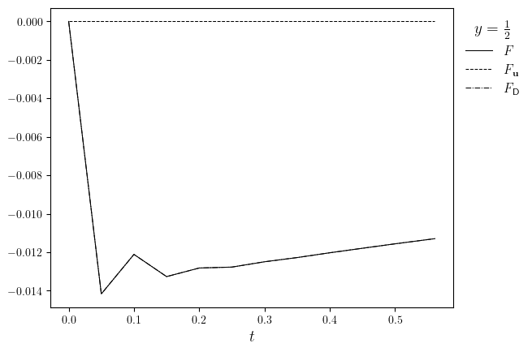

Rayleigh-Taylor instability of a Darcy fluid#
Create and run the simulation#
from functools import partial
import numpy as np
from lucifex.fdm import AB2, CN
from lucifex.sim import run, xdmf_to_npz
from lucifex.plt import (
plot_colormap, create_animation, plot_line, save_figure, display_animation,
get_ipynb_file_name, set_ipynb_variable,
)
from crocodil.dns import dns_darcy_rayleigh_taylor
STORE = 1
WRITE = None
DIR_ROOT = f'./figures/{get_ipynb_file_name()}'
DIR_PARAMS = ('Ra', 'Nx', 'Ny')
simulation = dns_darcy_rayleigh_taylor(
store_delta=STORE,
write_delta=WRITE,
dir_root=DIR_ROOT,
dir_params=DIR_PARAMS,
)(
aspect=2.0,
Nx=64,
Ny=64,
cell='quadrilateral',
scaling='advective',
Ra=5e2,
zeta0=0.5,
zeta0_eps=5e-2,
c_ampl=1e-6,
c_freq=(16, 8),
dt_max=0.1,
dt_Cu=0.5,
D_adv=AB2,
D_diff=CN,
diagnostic=True,
)
n_stop = set_ipynb_variable('N_STOP', 500)
dt_init = 0.05
n_init = 10
run(simulation, n_stop=n_stop, dt_init=dt_init, n_init=n_init)
if WRITE: xdmf_to_npz(simulation, delete_xdmf=False)
c, u, psi = simulation['c', 'u', 'psi']
save_fig = partial(save_figure, dir_path=simulation.dir_path, prefix=False)
Environment variable `N_STOP=12`
Visualization#
time_slice = slice(0, None, 2)
titles = [f'$c(t={t:.3f})$' for t in c.time_series[time_slice]]
anim = create_animation(
plot_colormap,
colorbar=False,
)(c.series[time_slice], title=titles)
anim_path = save_fig(f'{c.name}(t)', return_path=True)(anim)
display_animation(anim_path)
Diagnostics#
f = simulation['f']
fZeta0, fZetaPlus, fZetaMinus = f.split()
fig, ax = plot_line(
[(fZeta0.time_series, [np.sum(i) for i in fZeta0.value_series]), (fZeta0.time_series, fZeta0.value_series)],
cyc='black',
x_label='$t$',
legend_labels=['$F$', '$F_{\mathbf{u}}$', '$F_{\mathsf{D}}$'],
legend_title='$y=\\frac{1}{2}$',
)
save_fig('f(t)')(fig)
